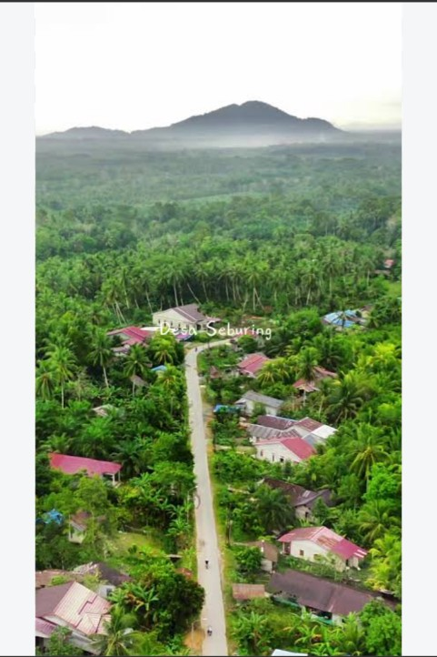

SELAMAT DATANG DI
Mengenal lebih dekat kehidupan, potensi, pendidikan, dan keindahan Desa Seburing Hilir.
PROFIL SINGKAT

Desa Seburing Hilir merupakan wilayah yang memiliki kehidupan masyarakat yang aktif, lingkungan yang asri, serta berbagai potensi yang dapat dikembangkan.
Website ini dibuat sebagai media informasi dan pengenalan Desa Seburing Hilir kepada masyarakat dan pengunjung.
Selengkapnya →KEUNGGULAN
Informasi umum mengenai Desa Seburing Hilir dan kehidupan masyarakatnya.
Berbagai potensi dan fasilitas yang dimiliki Desa Seburing Hilir.
Dokumentasi tempat dan kegiatan yang ada di Desa Seburing Hilir.